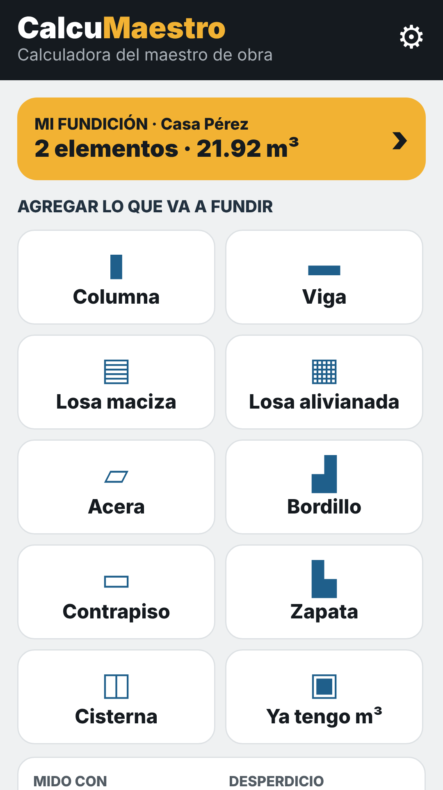
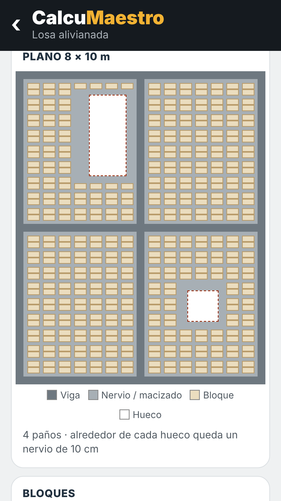
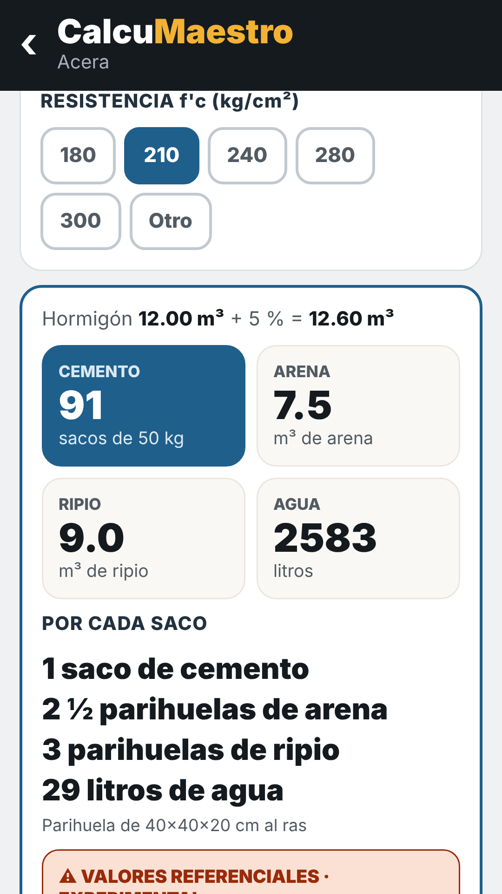
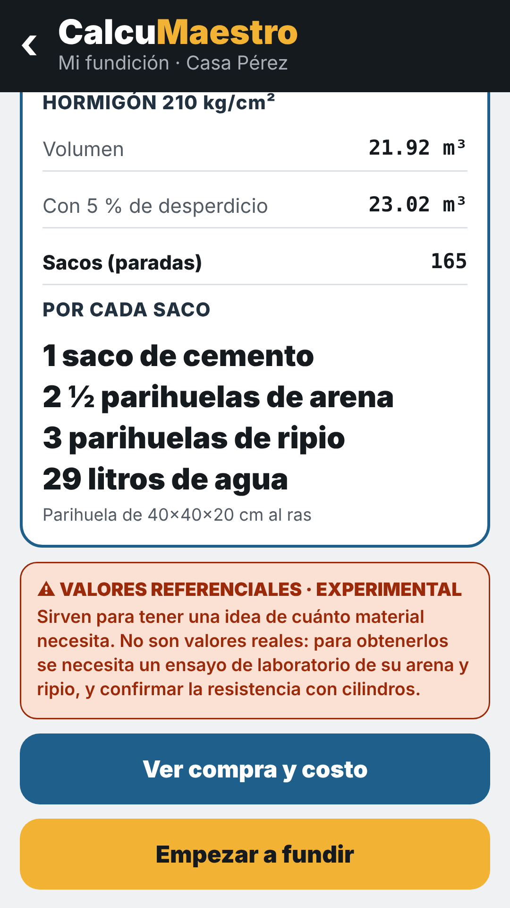
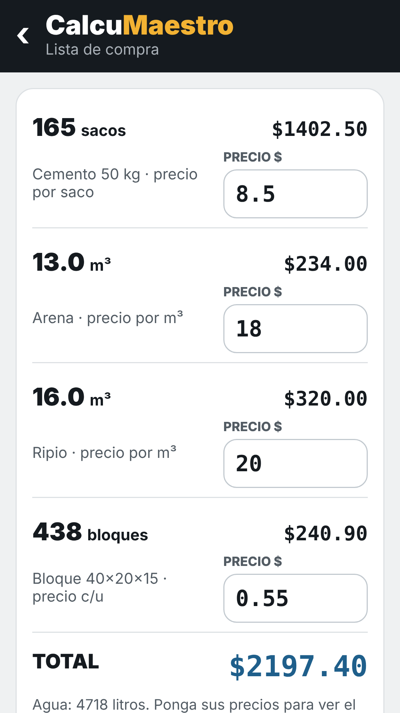
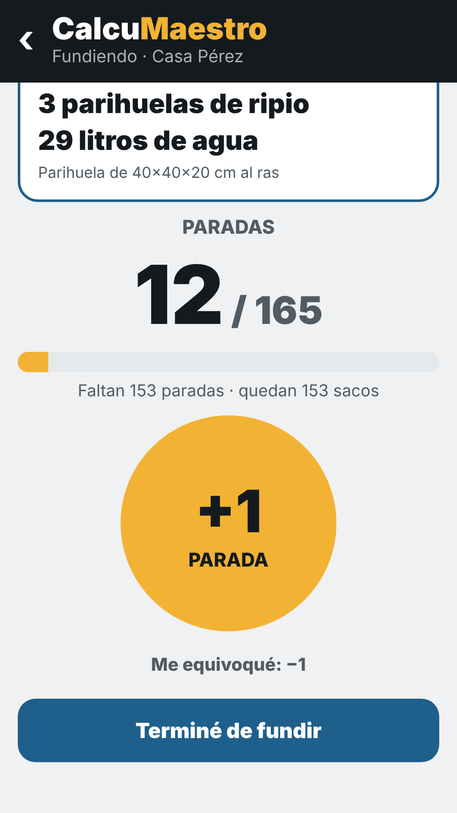

CalcuMaestro
Calculadora del maestro de obra
- Receta de hormigón por saco, en su propia parihuela, para 180 a 300 kg/cm².
- Columnas, vigas, losas, aceras, bordillos, contrapisos, zapatas y cisternas.
- Losa alivianada con ejes, vigas, bloques, huecos de escalera y tragaluz, y su plano.
- Lista de compra con costo, volquetas y envío por WhatsApp.
- Contador de paradas y avisos de curado. Funciona sin internet.
Valores referenciales · experimental. CalcuMaestro sirve para tener una idea de cuánto material necesita. No da valores reales: para obtenerlos se necesita un ensayo de laboratorio de su arena y ripio, y confirmar la resistencia con cilindros.
Disponible próximamente en Google Play.





